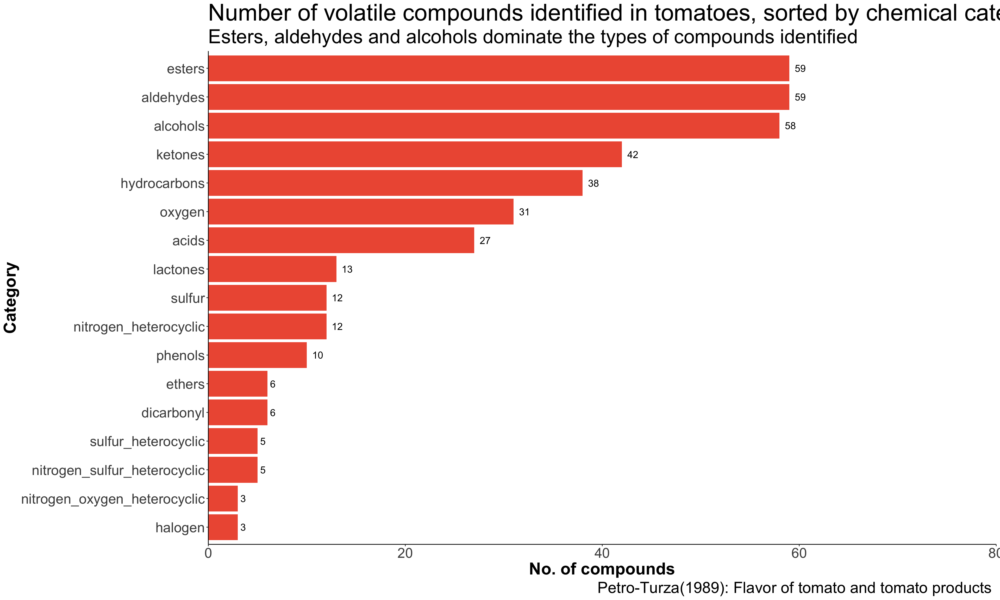

Scraping information from journal article
Tomato flavor is the result of interaction of aroma and taste, arising from the interplay of mixture of acids, sugars, amino acids, minerals and volatile compounds. Presence of sugar or organic acids alters taste panel perception of aroma descriptions of samples with the same concentration of volatile compounds.
Volatile compounds may originate from different biosynthesis pathways (Buttery, Teranishi, and Ling 1987), (Baldwin et al. 1998), (Yilmaz 2001):
The amount and types of volatiles are also influenced by:
The aim of this exercise was to scrape the table of approximately 400 compounds from the pdf, and to visualize them by chemical categories.
There is a very handy package, tabulizer, which allows for scraping of information from pdf articles. I tried out text scraping, and text cleaning, from the article (Petro‐Turza 1986)
I am interested in scraping the table of approximately 400 volatiles from page 18 to page 28. A copy of the pdf is saved in my working directory. I used the locate_area() function to determine the coordinates for scraping, and then extracted the text using extract_text() function.
file <- "1986-tomato volatiles.pdf"
# locate_areas(file)
p18 <- extract_text(file, pages = 18, area = list(c(115.5, 33.05, 641.923, 443.94)))
p19 <- extract_text(file, pages = 19,
area = list(c(117.15636, 53.20364, 651.60000, 465.22545 )))
p20 <- extract_text(file, pages = 20,
area = list(c(114.52364, 38.72364, 650.28364, 449.42909 )))
p21 <- extract_text(file, pages = 21,
area = list(c(119.29273 , 48.89727, 656.76545, 457.90091 )))
p22 <- extract_text(file, pages = 22,
area = list(c(113.20727, 30.32545, 643.70182, 466.04182)))
p23 <- extract_text(file, pages = 23,
area = list(c(122.25273, 49.84636, 652.01455, 473.13000 )))
p24 <- extract_text(file, pages = 24,
area = list(c(113., 34, 645.01818, 430.50000 )))
p25 <- extract_text(file, pages = 25,
area = list(c(119, 58 ,642.81273, 478.38818)))
p26 <- extract_text(file, pages = 26,
area = list(c(114, 35, 668.17818, 443.44000)))
p27 <- extract_text(file, pages = 27,
area = list(c(114.20727, 41.24545, 656.36364, 442.94000)))
p28 <- extract_text(file, pages = 28,
area = list(c(115.52000, 33.86909, 404.32000, 469.69455 )))
combined <- tribble(~page, ~text,
"p18", p18,
"p19", p19,
"p20", p20,
"p20", p20,
"p21", p21,
"p22", p22,
"p23", p23,
"p24", p24,
"p25", p25,
"p26", p26,
"p27", p27,
"p28", p28) %>%
dplyr::mutate(text_2 = gsub("\\n", "; ", text),
text_3 = str_split(text_2, "; ")) %>% # split by ; into new columns
unnest()
I combined all the text that was extracted into a tibble. Then I replaced all the “” with “;” and then used str_split() to split the compounds into individual rows.
Following which, I used a series to str_replace_all to clean up the text. The list of things to remove include:
As I replaced the commars, some of the chemical names were also changed. For example, 2,6-dimethylpyrazine became 26-dimethylpyrazine. I had to change the names by looking for numbers 26, and replacing them as 2,6.
I visually scanned through the list again and made changes where necessary, for eg, 2-formylpyiTole is actually 2-formylpyrrole.
cleaned_text <- combined %>%
dplyr::select(text_3) # 521
cleaned_text_b <- cleaned_text %>%
filter(!text_3 %in% c("(Continued)", "")) %>% # 503
filter(!is.na(text_3)) %>%
mutate(text_4 = str_replace_all(text_3, "[0-9]{2,3}", ""),
text_4 = str_replace_all(text_4, "\\ , ", ""),
text_4 = str_replace_all(text_4, "\\,,+", ""),
text_4 = str_replace_all(text_4, "\\(unknown structure\\)", ""),
text_4 = str_replace_all(text_4, "\\[[^\\]\\[]*]", ""),
text_4 = str_replace_all(text_4, "\\[[^\\[]*", ""),
text_4 = str_replace_all(text_4, " \\,", ""),
text_4 = str_replace_all(text_4, " \\/", ""),
# replace last commar, dash
text_4 = stri_replace_last(text_4, fixed = ",", ""),
text_4 = str_replace_all(text_4, "PJ-dimethyl-ö-octen-l-ol]", ""),
text_4 = str_replace_all(text_4, "/", ""),
# correct for commar replacement
text_4 = str_replace_all(text_4, "45", "4,5"),
text_4 = str_replace_all(text_4, "26", "2,6"),
text_4 = str_replace_all(text_4, "25", "2,5"),
text_4 = str_replace_all(text_4, "33", "3,3"),
text_4 = str_replace_all(text_4, "23", "2,3"),
text_4 = str_replace_all(text_4, "14", "1,4"),
text_4 = str_replace_all(text_4, "12", "1,2"),
text_4 = str_replace_all(text_4, "24", "2,4"),
text_4 = str_replace_all(text_4, "34", "3,4"),
text_4 = str_replace_all(text_4, "11", "1,1"),
text_4 = str_replace_all(text_4, "2E 4Z", "2E,4Z"),
text_4 = str_replace_all(text_4, "2E4E", "2E,4E"),
text_4 = str_replace_all(text_4, "2E4Z", "2E,4Z"),
text_4 = str_replace_all(text_4, "hy droxy", "hydroxy"),
text_4 = str_replace_all(text_4, "66", "6,6"),
text_4 = str_replace_all(text_4, "3E5E", "3E,5E"),
# further clean up
text_4 = str_replace_all(text_4, "\\(unknownstructure\\)", ""),
text_4 = str_replace_all(text_4, "\\(unknown", ""),
text_4 = str_replace_all(text_4, "2-formylpyiTole ", "2-formylpyrrole"),
text_4 = str_replace_all(text_4, "neraUcis-SJ-dimethyl\\^.o-octadienal]",
"neral"),
text_4 = str_replace_all(text_4, "2-methyl-l-propanol -",
"2-methyl-l-propanol"),
text_4 = str_replace_all(text_4, "propanal 9 09 39 49 5",
"propanal"),
text_4 = str_replace_all(text_4, "\\(methylthioH-propanol",
"\\(methylthio)-propanol"),
text_4 = str_replace_all(text_4, "\\(2,2,6-trimethyl-7-oxabicyclo",
""),
text_4 = str_replace_all(text_4, "._.", ""),
# remove white space
text_4 = str_replace_all(text_4, " \\s", ""),
# remove quotation marks
text_4 = str_remove_all(text_4, "\""))
One final clean:
tomato_cleaned <- cleaned_text_b$text_4 %>%
as.data.frame() %>%
unique()
names(tomato_cleaned) <- c("compounds")
tomato_cleaned <- print(tomato_cleaned, quote = FALSE) %>%
filter(!compounds == " ",
!compounds == "") # remove quotation marks
compounds
1 HYDROCARBONS
2 heptane
3 octane
4 nonane
5 decane
6 undecane
7 pentadecane
8 ethylene
9 camphene
10 3-carene
11 limonene
12 myrcene
13 a-phellandrene
14 ß-phellandrene
15 o-pinene
16 3-pinene
17 sabinene
18 terpinolene
19 triisobutylene
20 benzene
21 toluene
22 ethylbenzene
23 styrene
24 propylbenzene
25 cumene
26 butylbenzene
27 o-xylene
28 m-xylene
29 p-xylene
30 l-ethyl-4-methylbenzene
31 diethylbenzene
32 cymene
33 p-cymene
34 trimethylbenzene
35 hemimellitene
36 pseudocumene
37 mesitylene
38 biphenyl
39 naphtalene
40 ALCOHOLS
41 methanol
42 ethanol
43
44 1-propanol
46 2-propanol
47 2-methyl-l-propanol
48
49 2-methyl-2-propanol
50 2-propen-l-ol
51 1-butanol
53 2-butanol
54 buten-1-ol
55 2-methyl-l-butanol
56 3-methyl-l-butanol
58 3-methyl-2-buten-l-ol
59 2-methyl-3-buten-2-ol
60 2,3-butanediol
61 1-pentanol
63 2-pentanol
64 3-pentanol
65 cis-3-penten-l-ol
66 l-penten-3-ol
67 2-methyl-l-pentanol
68 3-methyl-l-pentanol
69 2-methyl-2-pentanol
70 1-hexanol
72 2-hexanol
73 hexenol
74 2-hexen-l-ol
75 cis-2-hexen-l-ol
76 trans-2-hexen-l-ol
77 3-hexen-l-ol
78 cis-3-hexen-l-ol
80 trans-3-hexen-1 -ol
81 cis-4-hexen-l-ol
82 methylhexanol
83 2-methyl-3-hexanol
84 5-methyl-1 -hexanol
85 1-heptanol
86 2-heptanol
87 4-heptanol
88 6-methyl-5-hepten-2-ol
89 1-octanol
91 l-octen-3-ol
92 7-methyl-l-octanol
93 1-decanol
94 8-p-cymenol
95 citronellol
96 farnesol
97 geraniol
98 linalool
100 nerol
101 nerolidol
102 terpinen-4-ol
103 o-terpineol
104 benzyl alcohol
105 2-phenylethanol
107 4-isopropylbenzyl alcohol
108 menthol
109 PHENOLS
110 phenol
111 o-cresol
112 p-cresol
113 4-ethylphenol
114 4-vinylphenol
115 guaiacol
116 4-ethyl-2-methoxyphenol
117 2-methoxy-4-vinylphenol
118 eugenol
119 3,4-xylenol
120 ETHERS
121 diethyl ether
122 1,1-dipropoxyethane
123 1-ethoxy-l (3-methylbutoxy)-ethane
124 1-ethoxy-l-pentoxyethane
125 l-methoxy-4-methylbenzene
126 isopropyl-methoxybenzene
127 2-methoxy-biphenyl
128 ALDEHYDES
129 formaldehyde
130 acetaldehyde
175 propanal
176 acrolein
177 2-methylpropanal
178 butanal
179 2-butenal
180 2-methylbutanal
181 3-methylbutanal
183 2-methyl-2-butenal
184 tiglaldehyde
185 pentanal
186 2-pentenal
187 trans-2-pentenal
188 3-pentenal
189 methylpentenal
190 hexanal
192 hexenal
193 2-hexenal
194 cis-2-hexenal
195 trans-2-hexenal
197 cis-3-hexenal
198 2E,4Z-hexadienal
199 2E,4E-hexadienal
200 heptanal
201 heptenal
202 2-heptenal
203 trans-2-heptenal
204 2E,4Z-heptadienal
205 2E,4E-heptadienal
206 octanal
207 2-octenal
208 trans-2-octenal
209 nonanal
210 2-nonenal
211 trans-2-nonenal
212 2E,4E-nonadienal
213 decanal
214 2-decenal
215 2,4-decadienal
216 2E,4Z-decadienal
217 2E,4E-decadienal
218 undecanal
219 dodecanal
221 citral
222 neral
223 geranial
224 citronellal
225 farnesal
226 benzaldehyde
228 3-methylbenzaldehyde
229 4-methylbenzaldehyde
230 salicylaldehyde
231 4-hydroxybenzaldehyde
232 3-methoxybenzaldehyde
233 anisaldehyde
234 2-phenylacetaldehyde
235 3-phenylpropanal
236 cinnamaldehyde
237 KETONES
238 acetone
239 2-butanone
240 3-hydroxy-2-butanone
241 3-buten-2-one
242 2-pentanone
243 3-pentanone
244 l-penten-3-one
245 3-penten-2-one
246 cyclopentanone
247 2-ethylcyclopentanone
248 2-methyl-3-pentanone
249 mesityl oxide
250 4-hydroxy- 4-methyl-2-pentanone
251 2,4-dimethylpentan-3-one
252 2-hexanone
253 2-hydroxy-2,6,6-trimethylcyclohexanone
254 2-heptanone
255 4-methyl-3-heptanone
256 methylheptenone
257 6-methyl-5-hepten-2-one
259 6-methyl-35-heptadien-2-one
260 2-octanone
261 3E,5E-octadien-2-one
262 2-nonanone
263 trans-2-nonen-4-one
265 undecanone
266 2-dodecanone
267 pseudo-ionone
268 geranylacetone
270 farnesylacetone
272 tt-ionone
273 ß-ionone
275 •y-ionone
276 epoxy-0-ionone
278 carvone
279 acetophenone
280 4-methylacetophenone
281 2-hydroxyacetophenone
282 4-methoxyacetophenone
283 4-methyl-4-phenyl-2-pentanone
284 l-phenyl-2-propanone
285 l-phenyl-2-butanone
286 DICARBONYL COMPOUNDS
287 glyoxal
288 methylglyoxal
289 biacetyl
291 2-oxo-3-butenal
292 2,3-pentanedione
293 2,3-heptanedione
294 ACIDS
295 formic
296 acetic
297 propanoic
298 2-methylpropanoic
299 butanoic
300 2-methylbutanoic
301 3-methylbutanoic
302 pentanoic
303 4-methylpentanoic
304 hexanoic
305 4-hexenoic
306 heptanoic
308 octanoic
309 geranic
310 nonanoic
311 myristic
312 pentadecanoic
313 palmitic
314 stearic
315 oleic
316 linoleic
317 linolenic
318 benzoic
319 salicylic
320 2-phenylacetic
321 cinnamic
322 4-hydroxycinnamic
323 ESTERS
324 methyl fonnate
325 ethyl fonnate
326 pentyl fonnate
327 phenetyl fonnate
328 methyl acetate
329 ethyl acetate
330 propyl acetate
331 butyl acetate
332 2-methylbutyl acetate
333 isopentyl acetate
334 pentyl acetate
335 hexyl acetate
336 trans-2-hexenyl acetate
337 3-hexenyl acetate
338 cis-3-hexenyl acetate
339 trans-3-hexeny 1 acetate2
340 heptyl acetate
341 6 -methylheptyl acetate
342 nonyl acetate
343 phenethyl acetate
344 citronellyl acetate
345 geranyl acetate
346 linalyl acetate
347 ethyl propanoate
348 isopentyl propanoate
349 citronellyl propanoate
350 methyl butanoate
352 2-butyl butanoate
353 isopentyl butanoate
354 citronellyl butanoate
355 geranyl butanoate
356 isobutyl 3-methylbutanoate
357 2-methylbutyl 3-methylbutanoate
358 isopentyl 3-methylbutanoate
359 isobutyl pentanoate
360 isopentyl pentanoate
361 methyl hexanoate
362 ethyl hexanoate
363 butyl hexanoate
364 isopentyl hexanoate
365 hexyl hexanoate
366 isopentyl heptanoate
367 methyl octanoate
368 propyl nonanoate
369 isopentyl nonanoate
370 propyl decanoate
371 isopentyl decanoate
372 methyl myristate
373 ethyl myristate
374 methyl pentadecanoate
375 methyl palmitate
376 ethyl palmitate
377 methyl oléate
378 methyl linoleate
379 ethyl linoleate
380 methyl linolenate
381 ethyl linolenate
382 methylsalicylate
383 ethyl salicylate
384 LACTONES
385 7-butyrolactone
386 2-methyl-4-butanolide
387 3-methyl-2-buten-4-olide
388 4-pentanolide
389 3-methyl-4-pentanolide
390 4-hexanolide
391 6-hydroxy-5-hexanolide
392 4-octanolide
393 5-octanolide
394 4-nonanolide
396 2,4-dimethyl-2-nonen-4-olide
397 dihydroactinidiolide
399 phtalide
400 SULFUR COMPOUNDS
401 hydrogen sulfide
402 dimethyl sulfide
403 ethylmethyl sulfide
404 dimethyl disulfide
405 methylpropyl disulfide
406 methanethiol
407 2-(methylthio)ethanol
408 3(methylthio)-propanol
409 5(methylthio)-l-pentanol
410 2(methylthio)-acetaldehyde
411 3(methylthio)-propanal
412 methyl-methanethiosulfonate
413 NITROGEN COMPOUNDS
414 methylamine
415 ethylamine
416 dimethylamine
417 trimethylamine
418 propylamine
419 butylamine
420 isobutylamine
421 dimethylethylamine
422 diethylamine
423 2-methylbutylamine
424 pentylamine
425 isopentylamine
426 diphenylamine
427 3-methylbutanal-oxime
428 butanenitrile
429 3-methylbutanenitrile
430 pentanenitrile
431 benzyl cyanide
432 3-methylnitrobutane
433 3-hydroxy-3-methylnitrobutane
434 HALOGEN COMPOUNDS
435 trichloromethane
436 trichloroethylene
437 1,2-dichlorobenzene
438 OXYGEN-CONTAINING HETEROCYCLIC COMPOUNDS
439 furan
440 2-methylfuran
441 2-ethylfuran
442 2-propylfuran
443 2-isobutenylfuran
444 2-isopropyl-5-methylfuran
445 2-isopropenyl-5-methylfuran
446 2-methyl-5-propenylfuran
447 2-pentylfuran
448 2-hexylfuran
449 2-heptylfuran
450 acetylfuran
451 2-acetylfuran
452 furfural
454 5-methylfurfural
455 2-acetyl-5-methylfuran
456 2-acetonyl-5-methylfuran
457 methyl-2-furancarboxylate
458 dibenzofuran
459 furfuryl alcohol
460 2-furancarboxylic acid
461 2-methyltetrahydro-3-furanone
462 linalool oxide I. or II.
463 linalool oxide I.
465 linalool oxide II.
467 linalool III. or IV.
468 structure)
469 1,4-dioxane
470 2,2,4-trimethyl-l3-dioxolane
471 2,7-dioxa-l,3,3-trimethylbicycloheptane
472 ó.S-dioxa-l.S-dimethylbicyclooctane
473 SULFUR-CONTAINING HETEROCYCLIC COMPOUNDS
474 2-forraylthiophene
475 3-formylthiophene
476 2-formyl-5-methylthiophene
477 2-acetylthiophene
478 2-thiophenecarboxyIic acid
479 NITROGEN-CONTAINING HETEROCYCLIC COMPOUNDS
480 pyrrole
481 2,5-dimethylpyrrole
483 2-formylpyrrole
484 2-acetylpyrrole
485 pyridine
486 2-formylpyridine
487 methylpyrazine
488 2-methylpyrazine
489 2,6-dimethylpyrazine
490 2-ethyl-6-vinylpyrazine
491 2-isopropyl-3-methoxypyrazine
492 indene
493 SULFUR- AND NITROGEN-CONTAINING HETEROCYCLIC COMPOUNDS
494 2-propylthiazole
495 2-isobutylthiazole
497 2-sec-butylthiazole
498 2-isopropyl-4-methylthiazole
499 benzothiazole
500 NITROGEN-AND OXYGEN-CONTAINING COMPOUNDS
501 4-butyloxazole
502 5-pentyl-4-ethyloxazole
503 4,5-dimethylisoxazole tomato_cleaned$compounds <- str_remove_all(tomato_cleaned$compounds,
"\\s")
The file could be exported as a .csv file as a back up, in case it is needed again in the future.
Next, I had to split the compounds into various chemical categories.
hydrocarbons <- tomato_cleaned %>%
as_tibble() %>%
slice(2:39) %>%
mutate(category = "hydrocarbons")
alcohols <- tomato_cleaned %>%
as_tibble() %>%
slice(41:98) %>%
mutate(category = "alcohols")
phenols <- tomato_cleaned %>%
as_tibble() %>%
slice(99:108) %>%
mutate(category = "phenols")
ethers<- tomato_cleaned %>%
as_tibble() %>%
slice(111:116) %>%
mutate(category = "ethers")
aldehydes<- tomato_cleaned %>%
as_tibble() %>%
slice(118:176) %>%
mutate(category = "aldehydes")
ketones<- tomato_cleaned %>%
as_tibble() %>%
slice(178:219) %>%
mutate(category = "ketones")
dicarbonyl<- tomato_cleaned %>%
as_tibble() %>%
slice(221:226) %>%
mutate(category = "dicarbonyl")
acids<- tomato_cleaned %>%
as_tibble() %>%
slice(228:254) %>%
mutate(category = "acids")
esters<- tomato_cleaned %>%
as_tibble() %>%
slice(256:314) %>%
mutate(category = "esters")
lactones<- tomato_cleaned %>%
as_tibble() %>%
slice(316:328) %>%
mutate(category = "lactones")
sulfur<- tomato_cleaned %>%
as_tibble() %>%
slice(330:341) %>%
mutate(category = "sulfur")
nitrogen<- tomato_cleaned %>%
as_tibble() %>%
slice(343:362) %>%
mutate(category = "nitrogen")
halogen<- tomato_cleaned %>%
as_tibble() %>%
slice(364:366) %>%
mutate(category = "halogen")
oxygen<- tomato_cleaned %>%
as_tibble() %>%
slice(368:398) %>%
mutate(category = "oxygen")
sulfur_heterocyclic<- tomato_cleaned %>%
as_tibble() %>%
slice(400:404) %>%
mutate(category = "sulfur_heterocyclic")
nitrogen_heterocyclic<- tomato_cleaned %>%
as_tibble() %>%
slice(406:417) %>%
mutate(category = "nitrogen_heterocyclic")
nitrogen_sulfur_heterocyclic<- tomato_cleaned %>%
as_tibble() %>%
slice(419:423) %>%
mutate(category = "nitrogen_sulfur_heterocyclic")
nitrogen_oxygen_heterocyclic<- tomato_cleaned %>%
as_tibble() %>%
slice(425:427) %>%
mutate(category = "nitrogen_oxygen_heterocyclic")
tomatoes_compounds <- bind_rows(hydrocarbons,
alcohols,
phenols,
ethers,
aldehydes,
ketones,
dicarbonyl,
acids,
esters,
lactones,
sulfur,
halogen,
oxygen,
sulfur_heterocyclic,
nitrogen_heterocyclic,
nitrogen_sulfur_heterocyclic,
nitrogen_oxygen_heterocyclic
)
plot <- tomatoes_compounds %>%
group_by(category) %>%
summarise(count = n()) %>%
ggplot(aes(x = reorder(category, count), y = count, label = count)) +
geom_col(fill = "tomato2") +
geom_text(aes(label = count), hjust = -0.5, size = 5) +
scale_y_continuous(expand = c(0,0), limits = c(0, 80)) +
labs(y = "No. of compounds",
x = "Category",
title = "Number of volatile compounds identified in tomatoes, sorted by chemical category",
subtitle = "Esters, aldehydes and alcohols dominate the types of compounds identified",
caption = "Petro-Turza(1989): Flavor of tomato and tomato products ") +
coord_flip() +
theme_classic() +
theme(title = element_text(size = 28),
axis.title = element_text(size = 24, face = "bold"),
axis.text = element_text(size = 20))
plot

It may have been easier to type out the list of 400 compounds, which would only take an hour or less, with the formatting done properly on the onset. However, if the table was much longer, text cleaning would be more effectively carried out by stringr. Some improvements could be made to the script so that I do not have to carry out multiple str_replace_all, and to automatically filter out by categories instead of manually defining them. However, it was a good beginner’s practice on text cleaning using the stringr package as I do not often have the chance to use regular expressions, and I found the str_detect, str_which and str_view_all functions extremely useful in locating regex matches.
The plot above only lists the number of compounds identified so far by chemical classes, but does not show which are the character impact compounds that contribute significantly to tomatoes.
Historically, researchers focused on identifying volatiles, quantifying them and classifying them based on their odor thresholds to determine which compounds played a contributory role to tomato flavor. However, the new trend is in assessing the importance of compounds based on how much they contribute to the liking of tomato flavor, and this could be by means of targeted metabolomics, or by generating prediction models for different descriptors of tomato flavor using regression analysis of both volatile and non-volatile compounds, or by carrying out multivariate modelling on physicochemical, volatile and sensory parameters(Rambla et al. 2013).
It would be interesting to try to apply prediction models and multivariate analysis in R.